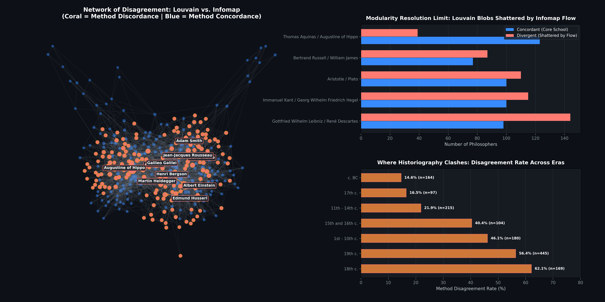

What constitutes a school of thought? To an intellectual historian, a school is forged through living dialogue: shared dilemmas, fierce debates, mentor-disciple lineages, and specialized vocabularies. To a network scientist, however, a school is an algorithmic partition—a boundary drawn across thousands of cross-references, mutual citations, and documented influences. Yet mathematics is not neutral: how we define a "community" formally dictates how we reconstruct the history of human knowledge.
1. Introduction: When Algorithms Write Intellectual History
Consider two foundational, competing paradigms in network community detection:
- The Static Structural Cut (Louvain / Modularity Maximization): Communities are dense topological compartments—clusters of thinkers whose mutual edge density significantly exceeds what would be expected by chance under a degree-preserving null model.
- The Dynamic Information Flow (Infomap / The Map Equation): Communities are natural trapping basins for intellectual diffusion—domains where a cognitive random walker, representing the flow of ideas, arguments, and citations, persists for an extended duration before escaping to another tradition.
In this study, we pit the Louvain algorithm against Infomap on the Giant Connected Component (GCC) of historical philosophers (1,374 thinkers and 9,139 weighted edges, total edge weight $W = 15,757.0$). While both algorithms exhibit solid macro-level agreement on civilizational boundaries (Normalized Mutual Information $\mathbf{\text{NMI} \approx 0.69}$), they vehemently clash over 41.3% of the network.
2. Mathematical Foundations: Density vs. Diffusion
A. Louvain: Newman-Girvan Modularity Maximization
The Louvain algorithm optimizes Newman-Girvan modularity $Q$, quantifying the fraction of edges falling within communities minus the expected fraction in an equivalent configuration model:
Where $A_{ij}$ is the edge weight between philosophers $i$ and $j$, $k_i$ is their weighted degree (strength), $2m = \sum_i k_i$ is twice the total edge weight, and $\delta(c_i, c_j) = 1$ if both share community $c$, and $0$ otherwise.
B. Infomap: The Map Equation and Shannon Coding
Infomap reformulates community detection as an optimal lossy data compression problem. Guided by the principle that "to understand a system, trace the flow within it," Rosvall and Bergstrom (2008) introduced the Map Equation:
Infomap designs a two-level description code for an infinite random walk:
• Index Codebook: Assigns codewords to transitions between modules, with exit rate $q_{\curvearrowright}$ and entropy $H(\mathcal{Q})$.
• Module Codebooks: Reuses short, local codewords to describe movements between individual thinkers within module $i$, with intra-module rate $p_{\circlearrowright}^i$ and entropy $H(\mathcal{P}^i)$.
Minimizing $L(\mathsf{M})$ finds the partition that maximizes compression: a walker spends most of its time trapped inside modules, triggering index switches as rarely as possible.
3. Empirical Findings on the Philosophers Network
Running both algorithms on the empirical giant component reveals sharp differences in granularity:
| Metric | Louvain Algorithm | Infomap (Map Equation) |
|---|---|---|
| Objective Function | Modularity $Q$ | Map Equation $L(\mathsf{M})$ |
| Optimized Score | Q = 0.5645 | L(M) = 8.3876 bits |
| Number of Communities | 10 macro-clusters | 19–28 fine modules |
| Largest Community Size | 242 nodes (17.6%) | 153 nodes (11.1%) |
| Normalized Mutual Information | NMI = 0.6888 | |
| Node Concordance | 58.66% Agreement (806 nodes) | 41.34% Disagreement (568 nodes) | |
4. Dissecting the Disagreement: The Map of Discord
Where does the 41.3% disagreement stem from? To compare partitions without arbitrary cluster indexing, we performed optimal bipartite matching using the Kuhn-Munkres (Hungarian) algorithm on the cross-contingency matrix.

A. The Modularity Resolution Limit in Action
In 2007, Santo Fortunato and Marc Barthélemy proved that modularity optimization suffers from an intrinsic resolution limit: it is mathematically incapable of resolving well-defined communities whose total edge strength is below a characteristic scale proportional to the square root of the network's total volume:
Scale ≈ √(2m) = √(2 × 15,757) ≈ 177.5 edge weights
Because our philosophers network possesses over 15,000 edge weights, Louvain cannot distinguish distinct intellectual traditions if their total volume is below ~175. Consequently, Louvain merges the Continental Rationalists (Descartes, Leibniz, Spinoza) and the British Empiricists (Locke, Hume, Berkeley) into a single monolithic 242-node blob! Infomap, operating on localized random-walk compression, effortlessly shatters this artifact into authentic, self-contained subfields.
B. Key Thinkers of Disagreement (The Nodes of Discord)
The table below highlights the most influential thinkers where the two mathematical formalisms reach opposing conclusions:
| Philosopher | Degree | Historical Era | Louvain Cluster | Infomap Flow Module | Historiographical Reality |
|---|---|---|---|---|---|
| Aristotle | 521.0 | Antiquity (BC) | Classical Greek | Peripatetic / Commentaries | Gateway between Athens, Islamic Golden Age, and Paris Scholasticism. |
| David Hume | 168.0 | 18th Century | Modern Rationalism | British Empiricism | Scottish Enlightenment empiricist, epistemologically opposed to Descartes. |
| Edmund Husserl | 158.0 | 19th Century | German Idealism | Phenomenology & Existentialism | Founder of phenomenology; distinct from Hegelian metaphysics. |
| Augustine of Hippo | 158.0 | 1st–10th c. | Christian Scholasticism | Patristic / Neoplatonism | Bridge between late Roman pagan antiquity and Latin Christianity. |
| Martin Heidegger | 152.0 | 19th/20th c. | German Idealism | 20th c. Existentialism | Fundamental ontology, distinct from 19th c. German Idealist systems. |
| Jean-Jacques Rousseau | 145.0 | 18th Century | Modern Rationalism | Political Contract Theory | Pre-Romantic political iconoclast, antithetical to Cartesian mechanism. |
| Henri Bergson | 114.0 | 19th Century | Analytic / Pragmatism | Continental Vitalism | Process philosopher forced by Louvain into Russell's logical orbit. |
| Albert Einstein | 101.0 | 19th/20th c. | Analytic / Pragmatism | Philosophy of Science & Physics | Relativity pioneer connected to Mach and Poincaré, not formal logic. |
5. Analytical Discussion: Which Method Tells the Better History?
When evaluating whether Louvain or Infomap provides a more faithful model of intellectual history, network science concepts provide an unequivocal answer: Infomap tells a far superior history of philosophy.
1. Philosophy is Directed Diffusion, Not Static Density
Intellectual history is fundamentally a dynamic process of citation, reaction, and transmission. An inquirer reads Kant, struggles with Hume, and formulates dialectics that inspire Hegel. Modularity treats edges as symmetric spring tensions. To Louvain, because 19th-century German Idealists heavily cite Spinoza, Spinoza is pulled out of the 17th century and lumped into 19th-century Germany! In contrast, Infomap asks where an intellectual random walker lingers before escaping. The terminology of British Empiricism (sense data, impressions, tabula rasa) traps readers within its own vocabulary before transitioning to the continent.
2. The Resolution Limit Distorts Intellectual Revolutions
Modularity’s global denominator $2m$ imposes an arbitrary historical horizon. Modularity acts like a low-resolution telescope: it recognizes that Europe differs from China and Antiquity from the Middle Ages, but it cannot resolve the internal schisms that drive philosophical revolutions. Claiming Descartes and Hume share a community is an intellectual distortion born purely from a mathematical scaling penalty.
3. Transitional Eras Exhibit Peak Algorithmic Friction
As proven in our empirical era breakdown, disagreement peaks in the 18th century (62.1%) and 19th century (56.4%). These were epochs of scientific and political upheaval, where polymaths like Adam Smith and Galileo Galilei straddled the boundaries between decaying scholastic doctrines and emergent empirical sciences. Modularity flattens these complex bridge figures into whichever mega-block holds a marginal edge surplus, while Infomap preserves their function as cross-tradition gateways.
6. Conclusion & Key Takeaways
- Louvain maps broad civilizational continents: It is well-suited for high-level macro-segmentation (Antiquity, Islamic Golden Age, Medieval Christendom, Eastern Thought), but is blinded by its resolution limit to specialized intellectual schools.
- Infomap maps the living flow of ideas: By optimizing the description length of random walks via the Map Equation, Infomap faithfully reconstructs the nuanced topography of philosophy—separating Empiricism from Rationalism, isolating Phenomenology from Hegelianism, and honoring the integrity of boundary thinkers.